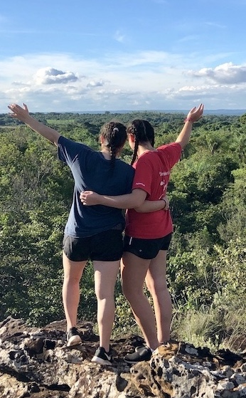
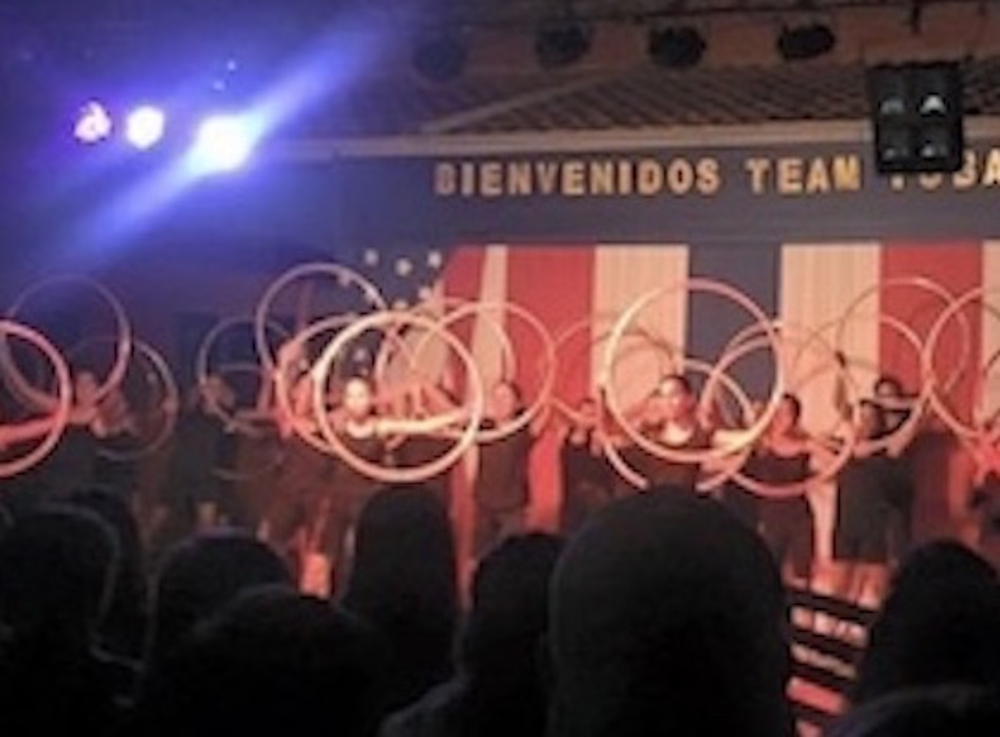
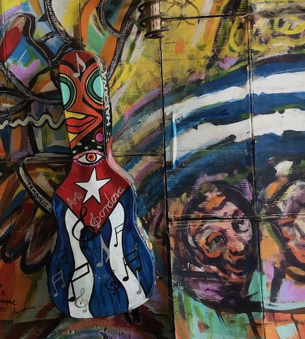

During my sophomore year of highschool I decided to take a step out of my comfort zone and travel to Paraguay on a community service trip with my high school. During my March break, a teacher at my school takes about a hundred students to an impoverished area in Paraguay. He and his family helped build a school there for kids who can’t afford to go to school. It was one of the best experiences that I was lucky enough to go to twice. Below is a summarized itinerary of what we did in Paraguay to help build a better future:
Everyday my classmates and I went to the Maachi School. We all were put into groups and took on tasks and challenges together. We helped with the garden, painted benches, organized the library and more. The students of the Maachi school are all so kind and welcoming. We all got so close over our ten day visit.
Aside from the physical labor work we were able to hang out and get to know the Maachi school kids. We got very close with the kids who hold a special place in my heart. Each group of Americans and Paraguyanas did every task together and competed in a dance competition. It got very intense, but was a lot of fun. One night we even had a carnival. My team and I won my first year! On the last day of our trip we had a pool party at the local pool club. We danced, ate empanadas, and played many games. We took a hike up the mountain nearby and was able to see a great view of Tobati. It was so beautiful.
We truly lived like Paraguayans while living with a host family. We ate traditional meals, practiced our Spanish, and exchanged so many stories. I even still keep in touch with all of them!
Tobati, Paraguay is one of the most amazing places I have ever been to. I’m so fortunate and lucky to have met such incredible people who live everyday to the fullest. They have taught me that it’s the people and the place that make life so special.


In June of 2017 my family and I traveled to Havana, Cuba. It was like traveling back in time. The old buildings and cars were so fascinating. Below is a summarized itinerary of my trip:
The first day in Havana we explored historical sites. First we went to the Museum of The Revolution where we saw monumental sites. Then we explored the Colon Cemetery which is an enormous cemetery that has incredible and elaborately sculpted memorials.
We ventured out to the tobacco fields in Vinales, Cuba. We saw how the cigars were made, rolled, and everything in between. Cuban cigars are world famous, so it was very cool to get a first hand look at the production of them.
The art in Cuba is extremely breathtaking. It’s colorful, powerful, and enjoyable to look at. We went to a local art festival and got to see a whole lot of paintings, sculptures, jewelry and more. My favorite part was talking to the artists and hearing about their lives and their artwork.

The night concluded with a surprise ride in the famous vintage cars. My family and I rode in a hot pink one that had no roof. It was so fun to ride around in the city! It really felt like I was in an old movie scene.
Havana, Cuba is such a place that everyone should visit. From the amazing food, welcoming people, and vintage cars, it’s a very cool experience. I really hope one day you can experience it like I did! Safe travels!
xx,
Molly